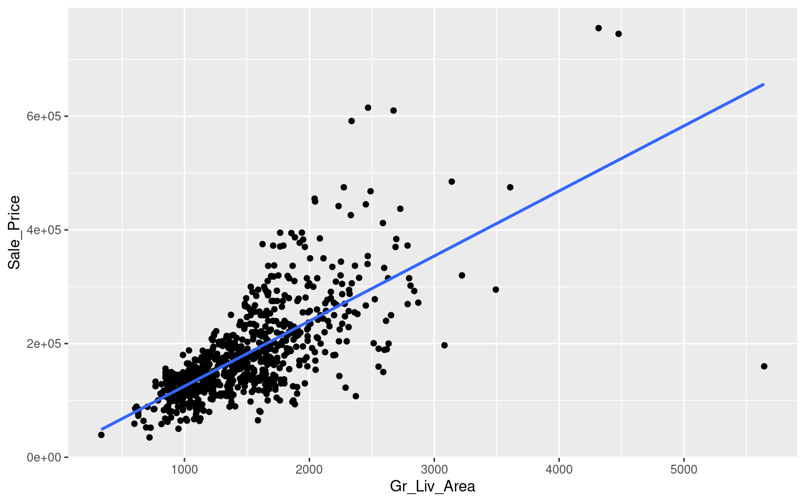
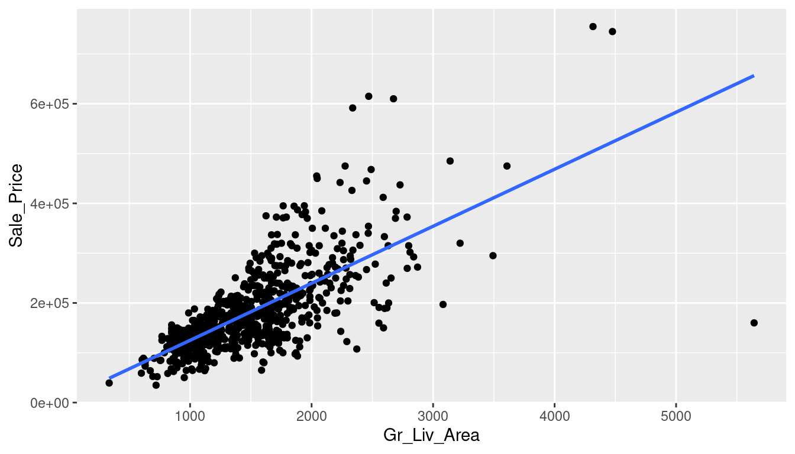

Chapter 3 Supervised Learning: Assessing Model Accuracy
Why are we going to study so many different ML techniques?
There is no free lunch in statistics: No one method dominates all others over all possible datasets.
3.1 Supervised Learning: Assessing Model Accuracy
Suppose we have labeled training data \((x_1,y_1), (x_2, y_2), \ldots, (x_n,y_n)\), i.e, \(n\) training data points/observations.
We fit/train a model \(\hat{y}=\hat{f}(x)\) (or, a classifier \(\hat{y}=\hat{C}(x)\)) on the training data and obtain estimates \(\hat{f}(x_1), \hat{f}(x_2), \ldots, \hat{f}(x_n)\) (or, \(\hat{C}(x_1), \hat{C}(x_2), \ldots, \hat{C}(x_n)\)).
We could then compute the
- Regression
\[\text{Training MSE}=\text{Average}_{Training} \left(y-\hat{f}(x)\right)^2 = \frac{1}{n} \displaystyle \sum_{i=1}^{n} \left(y_i-\hat{f}(x_i)\right)^2\]
- Classification
\[\text{Training Error Rate}=\text{Average}_{Training} \ \left[I \left(y\ne\hat{C}(x)\right) \right]= \frac{1}{n} \displaystyle \sum_{i=1}^{n} \ I\left(y_i \ne \hat{C}(x_i)\right)\]
3.2 Supervised Learning: Assessing Model Accuracy
But in general, we are not interested in how the method works on the training data. We want to measure the accuracy of the method on previously unseen test data.
Suppose, if possible, we have fresh test data, \((x_1^{test},y_1^{test}), (x_2^{test},y_2^{test}), \ldots, (x_m^{test},y_m^{test})\). Then we can compute,
- Regression
\[\text{Test MSE}=\text{Average}_{Test} \left(y-\hat{f}(x)\right)^2 = \frac{1}{m} \displaystyle \sum_{i=1}^{m} \left(y_i^{test}-\hat{f}(x_i^{test})\right)^2\]
- Classification
\[\text{Test Error Rate}=\text{Average}_{Test} \ \left[I \left(y\ne\hat{C}(x)\right) \right]= \frac{1}{m} \displaystyle \sum_{i=1}^{m} \ I\left(y_i^{test} \ne \hat{C}(x_i^{test})\right)\]
3.3 Supervised Learning: Assessing Model Accuracy
In the following slides, we look at three different examples with simulated toy datasets. We work within the regression setting (but the ideas also extend to the classification setting) and three different \(\hat{f}(.)\)’s.
- Linear Regression (Orange)
- Smoothing Spline 1 (Blue)
- More flexible Smoothing Spline 2 (Green)
The “true” function (simulated) is \(f(.)\) (black).
3.7 Supervised Learning: Bias-Variance Trade-off
Why is the Test MSE U-shaped?
Suppose we have fit a model \(\hat{f}(x)\) to some training data. Let the “true” model be \(Y=f(x)+\epsilon\). Let \((x_0, y_0)\) be a test observation.
We have,
\[\underbrace{E\left(y_0-\hat{f}(x_0)\right)^2}_{total \ error}=\underbrace{Var\left(\hat{f}(x_0)\right)}_{source \ 3} + \underbrace{\left[Bias\left(\hat{f}(x_0)\right)\right]^2}_{source \ 2}+\underbrace{Var(\epsilon)}_{source \ 1}\]
where \(Bias\left(\hat{f}(x_0)\right)=E\left(\hat{f}(x_0)\right)-f(x_0)\)
3.8 Supervised Learning: Bias-Variance Trade-off
source 1: how \(y\) differs from “true” \(f(x)\)
source 2: how \(\hat{f}(x)\) (when fitted to the test data) differs from \(f(x)\)
source 3: how \(\hat{f}(x)\) varies among different randomly selected possible training data
3.10 Question!!!
As the flexibility of a model \(\hat{f}(\mathbf{X})\) increases,
its variance \(\underline{\hspace{5cm}}\) (increases/decreases)
its bias \(\underline{\hspace{5cm}}\) (increases/decreases)
its training MSE \(\underline{\hspace{5cm}}\) (increases/decreases)
its test MSE \(\underline{\hspace{5cm}}\) (increases/decreases/U-shaped)
3.11 Simple Linear Regression (SLR)
Response \(Y\) and a single predictor variable \(X\). We assume
\[Y=f(\mathbf{X}) + \epsilon=\beta_0 + \beta_1 X+ \epsilon\]
Parameters/Coefficients: \(\beta_0\) (intercept) and \(\beta_1\) (slope)
Training data: \((x_1,y_1), (x_2, y_2), \ldots, (x_n,y_n)\)
We use training data to find \(\hat{\beta}_0\) and \(\hat{\beta}_1\) such that
\[\hat{y}=\hat{\beta}_0 + \hat{\beta}_1 \ x\]
3.12 Question!!!
Linear regression is
\(\underline{\hspace{5cm}}\) (supervised/unsupervised)
\(\underline{\hspace{5cm}}\) (regression/classification)
\(\underline{\hspace{5cm}}\) (parametric/non-parametric)
3.13 SLR: Estimating Parameters
Training data: \((x_1,y_1), (x_2, y_2), \ldots, (x_n,y_n)\)
Observed response: \(y_i\) for \(i=1,\ldots,n\)
Predicted response: \(\hat{y}_i\) for \(i=1, \ldots, n\)
Residual: \(e_i=y_i - \hat{y}_i\) for \(i=1, \ldots, n\)
Residual Sum of Squares (RSS): \(RSS =e^2_1+e^2_2+\ldots+e^2_n\)
Problem: Find \(\hat{\beta}_0\) and \(\hat{\beta}_1\) which minimizes \(RSS\)
3.15 SLR: Estimating Parameters
The least squares regression coefficient estimates are
\[\hat{\beta}_1=\dfrac{\displaystyle\sum_{i=1}^n (x_i-\bar{x})(y_i-\bar{y})}{\displaystyle\sum_{i=1}^n (x_i-\bar{x})^2}\]
\[\hat{\beta}_0=\bar{y}- \hat{\beta}_1 \ \bar{x}\] where \(\bar{y}=\dfrac{1}{n} \displaystyle\sum_{i=1}^n y_i\) and \(\bar{x}=\dfrac{1}{n} \displaystyle\sum_{i=1}^n x_i\).
3.16 Ames Housing Dataset
Contains data on 881 properties in Ames, IA.
ames <- readRDS("AmesHousing.rds") # read in the dataset after specifying directory3.17 Ames Housing dataset
Variable descriptions:
Sale_Price: Property sale price in USDGr_Liv_Area: Above grade (ground) living area square feetGarage_Type: Garage locationGarage_Cars: Size of garage in car capacityGarage_Area: Size of garage in square feetStreet: Type of road access to propertyUtilities: Type of utilities availablePool_Area: Pool area in square feetNeighborhood: Physical locations within Ames city limitsScreen_Porch: Screen porch area in square feetOverall_Qual: Rates the overall material and finish of the houseLot_Area: Lot size in square feetLot_Frontage: Linear feet of street connected to propertyMS_SubClass: Identifies the type of dwelling involved in the sale.Misc_Val: Dollar value of miscellaneous featureOpen_Porch_SF: Open porch area in square feetTotRms_AbvGrd: Total rooms above grade (does not include bathrooms)First_Flr_SF: First Floor square feetSecond_Flr_SF: Second floor square feetYear_Built: Original construction date
3.18 SLR: Estimating Parameters
Ames Housing dataset
slrfit <- lm(Sale_Price ~ Gr_Liv_Area, data = ames) # fit the SLR model
summary(slrfit) # produce result summaries of the SLR model##
## Call:
## lm(formula = Sale_Price ~ Gr_Liv_Area, data = ames)
##
## Residuals:
## Min 1Q Median 3Q Max
## -496577 -33108 -3216 22644 321629
##
## Coefficients:
## Estimate Std. Error t value Pr(>|t|)
## (Intercept) 10546.305 6678.534 1.579 0.115
## Gr_Liv_Area 114.504 4.221 27.127 <2e-16 ***
## ---
## Signif. codes: 0 '***' 0.001 '**' 0.01 '*' 0.05 '.' 0.1 ' ' 1
##
## Residual standard error: 60480 on 766 degrees of freedom
## (113 observations deleted due to missingness)
## Multiple R-squared: 0.49, Adjusted R-squared: 0.4893
## F-statistic: 735.9 on 1 and 766 DF, p-value: < 2.2e-163.19 SLR: Model
Ames Housing dataset
We have, \(\hat{\beta}_0=10546.305\) and \(\hat{\beta}_1=114.504\).
The least squares regression model is
\[\widehat{\text{Sale_Price}} = 10546.305 + 114.504 \times \text{Gr_Liv_Area}\]
3.20 SLR: Model
Ames Housing dataset
ggplot(data = ames, aes(x = Gr_Liv_Area, y = Sale_Price)) +
geom_point() + # create scatterplot
geom_smooth(method = "lm", se = FALSE) # add the SLR line## `geom_smooth()` using formula = 'y ~ x'## Warning: Removed 113 rows containing non-finite values (`stat_smooth()`).## Warning: Removed 113 rows containing missing values (`geom_point()`).
3.21 SLR: Prediction
Ames Housing dataset
For a house with Gr_Liv_Area equaling 1000 square feet, we have
\[\widehat{\text{Sale_Price}} = 10546.305 + 114.504 \times \text{Gr_Liv_Area} = 10546.305 + 114.504 \times 1003 \approx 125393.8 \ \text{USD}\]
predict(slrfit, newdata = data.frame(Gr_Liv_Area = 1003)) # predict response for a given value of x## 1
## 125393.6The observed sale price of a property with Gr_Liv_Area equaling 1000 square feet is 142500 USD. Then,
\(\text{residual} = \text{observed}-\text{predicted} \approx 142500 - 125393.6 \approx 17106.4\)
Note: We should not attempt to predict the response for a value of the predictor that lies outside the range of our data. This is called extrapolation, and the predictions tend to be unreliable.
3.22 SLR: Interpreting Parameters
Ames Housing dataset
\(\hat{\beta}_0=10546.305\): When
Gr_Liv_Areais 0 square feet, the predicted sale price is approximately 10546.305 USD.\(\hat{\beta}_1=114.504\): For every 1 square foot increase in
Gr_Liv_Area,Sale_Priceis expected to increase by approximately 114.504 USD.
3.23 SLR: Assessing Accuracy of Model
- Residual Standard Error (RSE)
\[RSE=\sqrt{\dfrac{RSS}{n-2}}\]
RSE is considered as a measure of the lack of fit of the linear model to the data. It is the average amount that the response will deviate from the true regression line. It is measured in the units of the response variable.
- \(R^2\) statistic
\[R^2=\dfrac{TSS-RSS}{TSS}\]
where \(TSS=\sum_{i=1}^n \left(y_i-\bar{y}\right)^2\)
\(R^2\) measures the proportion of variability in the response that is explained by the linear regression model using the predictor variable.
\(R^2\) is unitless, \(0 < R^2 < 1\), and is generally expressed as a percentage.
3.24 SLR: Assessing Accuracy of Model
Ames Housing dataset
summary(slrfit) # produce result summaries of the SLR model##
## Call:
## lm(formula = Sale_Price ~ Gr_Liv_Area, data = ames)
##
## Residuals:
## Min 1Q Median 3Q Max
## -496577 -33108 -3216 22644 321629
##
## Coefficients:
## Estimate Std. Error t value Pr(>|t|)
## (Intercept) 10546.305 6678.534 1.579 0.115
## Gr_Liv_Area 114.504 4.221 27.127 <2e-16 ***
## ---
## Signif. codes: 0 '***' 0.001 '**' 0.01 '*' 0.05 '.' 0.1 ' ' 1
##
## Residual standard error: 60480 on 766 degrees of freedom
## (113 observations deleted due to missingness)
## Multiple R-squared: 0.49, Adjusted R-squared: 0.4893
## F-statistic: 735.9 on 1 and 766 DF, p-value: < 2.2e-163.25 Your Turn!!!
The Advertising.csv dataset contains data on the sales (in 1000 units) of a product in 200 different markets, along with advertising budgets (in $1000) for the product for three different media: TV, radio, and newspaper.
Create an SLR model
slrfit1with sales as response and TV as predictor. Display the least squares regression line on a scatterplot.Create another SLR model
slrfit2with sales as response and radio as predictor. Predict the sales when the radio advertising budgets are $20,000 and $40,000.Between
slrfit1andslrfit2, which model is better in terms of the variability explained within sales?Between TV and radio advertising budgets, which would result in a higher increase in sales for an additional $1000 investment?
3.26 Question!!!
Consider the population model \(Y = \beta_0 + \beta_1 X + \epsilon\). The estimated model is \(\hat{y} = \hat{\beta}_0 + \hat{\beta}_1 x\). Reflecting on the concepts from week 1, fill in the blanks below.
If \(\beta_0\) and \(\beta_1\) were known (“truth” known), the discrepancy between response \(Y\) and \(\beta_0 + \beta_1 X\) is related to the \(\underline{\hspace{5cm}}\) (irreducible/reducible) error.
The inaccuracy of \(\hat{\beta}_0\) and \(\hat{\beta}_1\) as estimates of \(\beta_0\) and \(\beta_1\) is related to the \(\underline{\hspace{5cm}}\) (irreducible/reducible) error.
3.27 Question!!!
The least squares approach
minimizes the sum of squared predictor values.
minimizes the sum of squared response values.
minimizes the sum of squared residuals.
maximizes the sum of squared residuals.
3.28 Question!!!
Geometrically, the residual for the \(i^{th}\) observation in a regression model is the
horizontal distance between the observed response and the vertical axis.
distance of the predicted response from the horizontal axis.
distance of the predicted response from the vertical axis.
vertical distance between the observed response and predicted response.
3.29 Regression: Conditional Averaging
Ames Housing dataset
ggplot(data = ames, aes(x = Gr_Liv_Area, y = Sale_Price)) +
geom_point() + # create scatterplot
geom_smooth(method = "lm", se = FALSE) # add the SLR line## `geom_smooth()` using formula = 'y ~ x'## Warning: Removed 113 rows containing non-finite values (`stat_smooth()`).## Warning: Removed 113 rows containing missing values (`geom_point()`).
What is a good value of \(\hat{f}(x)\), say at \(x=1008\)?
3.30 Regression: Conditional Averaging
What is a good value of \(\hat{f}(x)\), say at \(x=1008\)? A possible value is
\[\hat{f}(x)=E(Y|x=1008)\]
\(E(Y|x=1008)\) means expected value, or, the average of the observed responses at \(x=1008\).
But we may not observe responses for certain \(x\) values.
3.31 K-Nearest Neighbors Regression
Non-parametric approach
Given a value for \(K\) and a test data point \(x_0\),
\[\hat{f}(x_0)=\dfrac{1}{K} \sum_{x_i \in \mathcal{N}_0} y_i=\text{Average} \ \left(y_i \ \text{for all} \ i:\ x_i \in \mathcal{N}_0\right) \]
where \(\mathcal{N}_0\) is known as the neighborhood of \(x_0\).
- The method is based on the concept of closeness of \(x_i\)’s from \(x_0\) for inclusion in the neighborhood \(\mathcal{N}_0\). Usually, the Euclidean distance is used as a measure of closeness. The Euclidean distance between two \(p\)-dimensional vectors \(\mathbf{a}=(a_1, a_2, \ldots, a_p)\) and \(\mathbf{b}=(b_1, b_2, \ldots, b_p)\) is
\[||\mathbf{a}-\mathbf{b}||_2 = \sqrt{(a_1-b_1)^2 + (a_2-b_2)^2 + \ldots + (a_p-b_p)^2}\]
3.32 K-Nearest Neighbors Regression: Fit
Ames Housing dataset
library(caret) # load the caret package
knnfit1 <- knnreg(Sale_Price ~ Gr_Liv_Area, data = ames, k = 1) # 1-nn regression
knnfit5 <- knnreg(Sale_Price ~ Gr_Liv_Area, data = ames, k = 5) # 5-nn regression3.33 K-Nearest Neighbors Regression: Prediction
Ames Housing dataset
nearest_neighbors <- ames %>%
select(Sale_Price, Gr_Liv_Area) %>%
mutate(distance = sqrt((1008-Gr_Liv_Area)^2)) %>% # calculate distance
arrange(distance) # sort by increasing distance
predict(knnfit1, newdata = data.frame(Gr_Liv_Area = 1008)) # 1-nn prediction## [1] 135166.7predict(knnfit5, newdata = data.frame(Gr_Liv_Area = 1008)) # 5-nn prediction## [1] 1182803.34 Regression Methods: Comparison
Ames Housing dataset
## Warning: Removed 113 rows containing missing values (`geom_point()`).Figure 3.2: dashed cyan: 1-nn fit, dotted red: 5-nn fit, blue: linear regression fit